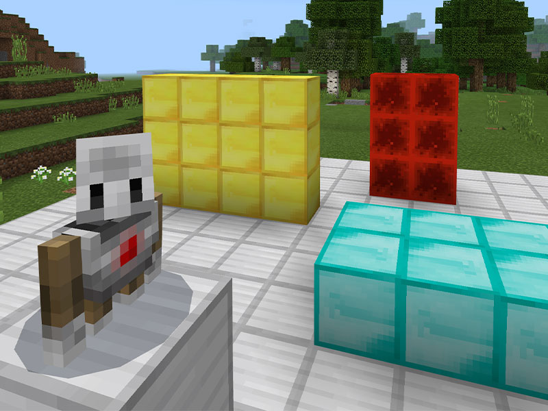

Education Edition: How Video Games Revolutionized Learning
by Cloe Angelica Gorgonio
When parents think of video games and learning, they’d assume that gaming would get in the way of their children’s learning. But, that is far from the truth, as with the right titles, their little ones could end up learning something new. For the past several decades, video games have been and continue to be one of the most popular pastimes for children, and so companies and game studios found ways to get children to study through the use of video games, which falls under what they call “edutainment”—a fusion of both education and entertainment.
The application of education into fun and interactive things isn’t a new concept as it dates back centuries, with games like chess. But the application of education into video games isn’t so recent either, with the first educational video game arguably being “Logo Programming” from 1967, but it was more of an application for the programming language Logo. When it comes to actual educational video games, the first would be “Lemonade Stand”, released in 1977, that focuses on the things one must do to run a successful lemonade stand. But these days, there are plenty of options to choose from, that also covers a wide range of topics and subjects.
Language is important when it comes to communicating with others. Reading and writing are essential skills for young children to learn, and so it’s best that they learn a lot of new words along the way. Games like those from the Book Worm series of games from PopCap Games allow its players to form words using tiles laid on the players’ screen to earn points, the longer the word, the more points you get, kinda like the board game Scrabble. Brainiversity is another game that stimulates the brain, with activities that cover Language, but it also covers Memory, Analysis, and Mathematics.
Speaking of mathematics, it is one of the 4 pillars of STEM, and is a crucial part in discovering new breakthroughs. Mathematics is one of the reasons why we have computers today after all. If you want your child to get started with the basics of mathematics, you can turn to Kahoot! Math Labs, and other math-related Kahoot! apps developed in conjunction with DragonBox. With lessons in counting, multiplication, geometry, algebra, and more, allowing kids to learn and play at the same time. Another set of games to consider are those under the Big Brain Academy series, with fun mathematical and non-mathematical activities, that award players with points in a multiplayer setting.
Science is also a very interesting and important subject for children, as it tells more about the world around them. Along with Mathematics, Science is also under STEM, and is responsible for a lot of scientific breakthroughs. Minecraft is a sandbox game released in 2011 by Mojang Studios, which rose to popularity and is one of the most popular games of all time. In 2016, Minecraft Education Edition was released, and provided lessons in chemistry, programming, and more, for students to learn with their teachers, in the blocky game. Animal Jam (now Animal Jam Classic) is an online multiplayer game released 2010 by WildWorks, in collaboration with National Geographic, where players create their own animal character and interact with others, whilst learning more about zoology through the game’s various activities and mini-games.

And that was just the tip of the iceberg of educational games, with many more that also tackle History, Geography, Arts, Physical Education, and much more. With how popular games still are, companies and game studios continue to innovate in implementing education into video games, and further gamifying the way how the youth learns. The gamification of education is only beginning, and is already revolutionizing the way we teach children, by means of making it fun and entertaining, yet easy to understand and digest for them. Maybe in the future, games will become an integral part of teaching and learning, but we will have to wait and see.